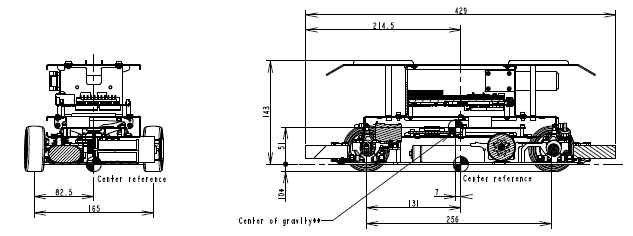
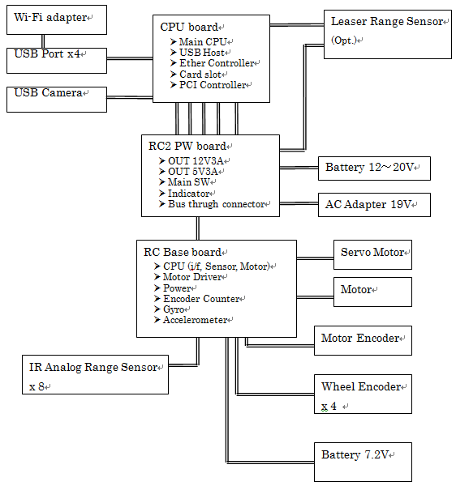

ZMP RoboCar 1/10 2016 Reference Manual
4. システム構成
メカニズム
概観
 図: RoboCarの外観
図: RoboCarの外観
外形
 図: RoboCarの外形
エレキ
ブロックダイアグラム
RoboCarエレキブロックダイアグラムを以下に示します。
 図: RoboCar ブロック図
ソフトウェア
概要
CPUボードにはRTパッチを適用したLinux(ubuntu14.04 LTS)が稼動しています。 BASEボードはセンサなどの情報を取得して、 駆動用のモータをコントロールするファームウェアが動作しています。 RoboCarは、ネットワーク越しにPCと通信して協調動作などを行うことができます。
 図: ソフトウェアブロック図
図: ソフトウェアブロック図
Linux RoboCarライブラリ
別章で詳しく説明します。また、APIリファレンスが参考になります。
BASEボードファームウェア
以下の処理を行います。CPUとの通信はシリアル(RS232C)で行われ、 10[msec]毎にすべての情報をCPUに送信します。
DCモータドライブ
16bitPWMによりFETのH-Bridgeを介してDCモータを駆動します。
ロータリーエンコーダ
モータ軸1箇所と、ホイールの4つの回転をロータリーエンコーダで 計測しています。カウント値は12bit分です。
ジャイロセンサ
ジャイロセンサ(yaw軸)からの入力をA/D変換で取得します。
加速度センサ
加速度センサ(xyz軸)からの入力をA/D変換で取得します。
赤外線測距センサ
赤外線測定距離センサ8個分の値をA/D変換で取得します。
速度制御
DCモータの回転速度をPID制御でコントロールします。